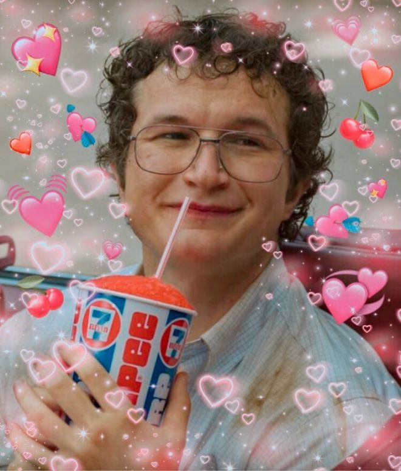
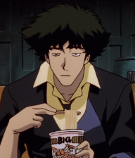

Jacob is a junior in informatics with a focus on digital culture. His skills are Java, HTML, CSS and JavaScript. In his free time, Jacob likes to write, listen to music, play open-world games, and play D&D.
Morgan C

Morgan is a junior in informatics with a focus on computer gaming. Her skills are game development (Unity or GameMaker Studio), web development (HTML, CSS, JavaScript), along with profieciency in Java, C# and C++. In her free time Morgan likes to play video games, hang out with friends, watch Netflix or hike.
Ralph M
Ralph is a junior in informatics with a focus on enterprise or digital culture. His skills are Java, Python, HTML, CSS and JavaScript. In his free time, Ralph likes to watch Netflix, listen to music, play guitar, play videogames, skateboard or hangout with friends.
Tyler B
Tyler is a junior in informatics with a focus on computer gaming. His skills are Java, HTML, CSS and story/world-building. In his free time, Tyler likes to write, play videogames, discuss politics, play D&D and listen to music.
Alex M

Alex is a junior in informatics with a focus on computer gaming. His skills are Java, C++, HTML, CSS and JavaScript. In his free time, Alex likes to watch anime, play games late night with friends and play soccer.